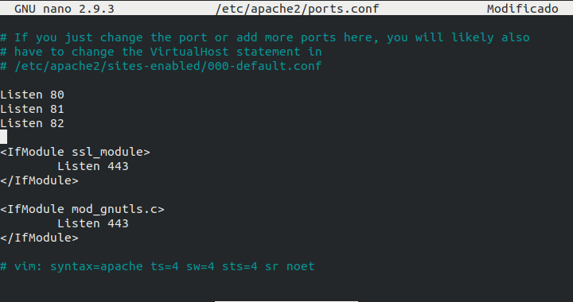
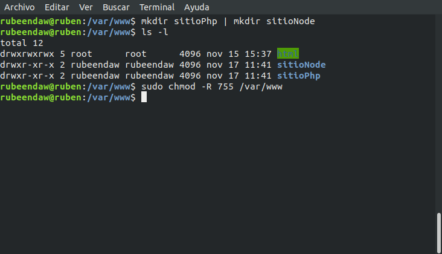
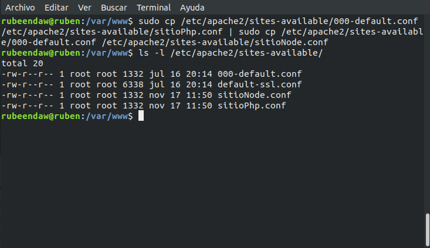
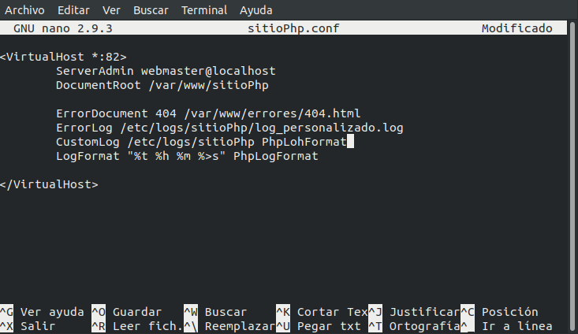
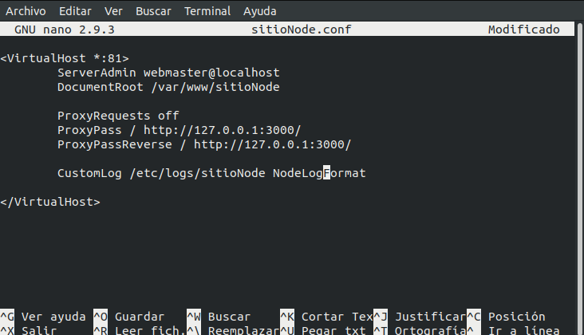
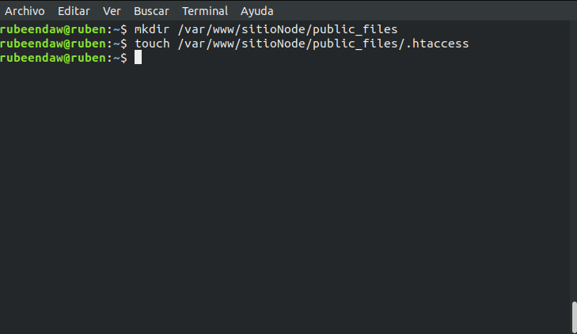
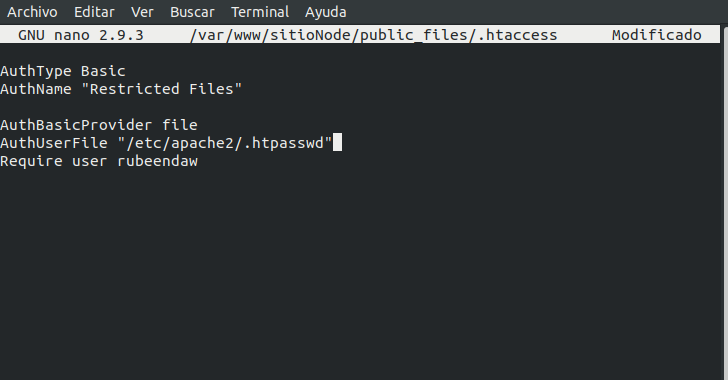
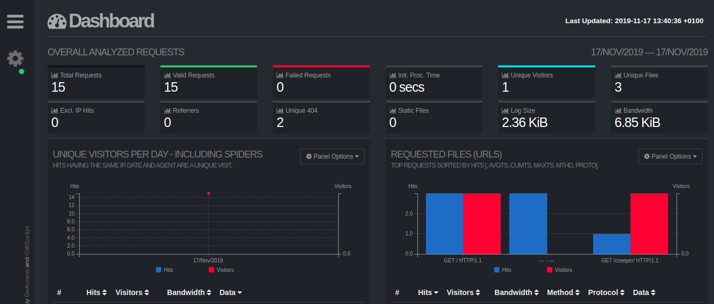

Actividad 3
Apache HTTP Server es un software de servidor web gratuito y de código abierto.
Permite a los propietarios servir contenido en la web. Es uno de los servidores web más antiguos y confiables, con la primera versión lanzada hace más de 20 años.
En sus inicios se basaba en el código de NCSA HTTPd 1.3. Actualmente es el servidor web más usado en todo el mundo, 70% del total. Está desarrollado y mantenido por una comunidad de usuarios en torno a la Apache Software Foundation.
En definitiva, Apache es un servidor HTTP que permite servir contenido a las peticiones que vienen desde los clientes web (navegadores).
Vamos a partir de que tenemos apache instalado, en caso de no tenerlo, lo instalamos con:
este comando: sudo apt install apache2
Vamos a añadir los puertos 81 y 82 para los 2 sitios que vamos a dar de alta, para eso vamos a editar el fichero ports.conf en la ruta /etc/apache2:

Vamos a crear los 2 sitios en /var/www y le daremos permisos a la carpeta www:

Creamos los ficheros de configuración del sitioPhp y sitioNode:

Ahora vamos a proceder a editar dichos archivos (sitioPhp):

Ahora vamos a proceder a editar dichos archivos (sitioNode):

Vamos a instalar el paquete apache2-utils
sudo apt-get install apache2-utils
Vamos a indicar que pueda entrar el usuario rubeendaw con este comando:
sudo htpasswd -c /etc/apache2/.htpasswd rubeendaw
También es importante activar estos 2 módulos:
sudo a2enmod proxy proxy_http
Creamos en el sitioNode la carpeta public_files y dentro el .htaccess

Editamos el .htaccess

Go Access
Vamos a usar GoAccess y veremos su resultado en http://localhost/logs_sistema
El primer paso es instalarlo:
apt-get install goaccess
El segundo, poner en marcha en la ruta que deseamos:
goaccess /var/log/apache2/access.log -o /var/www/html/logs_sistema.html --log-format=COMBINED --real-time-html
